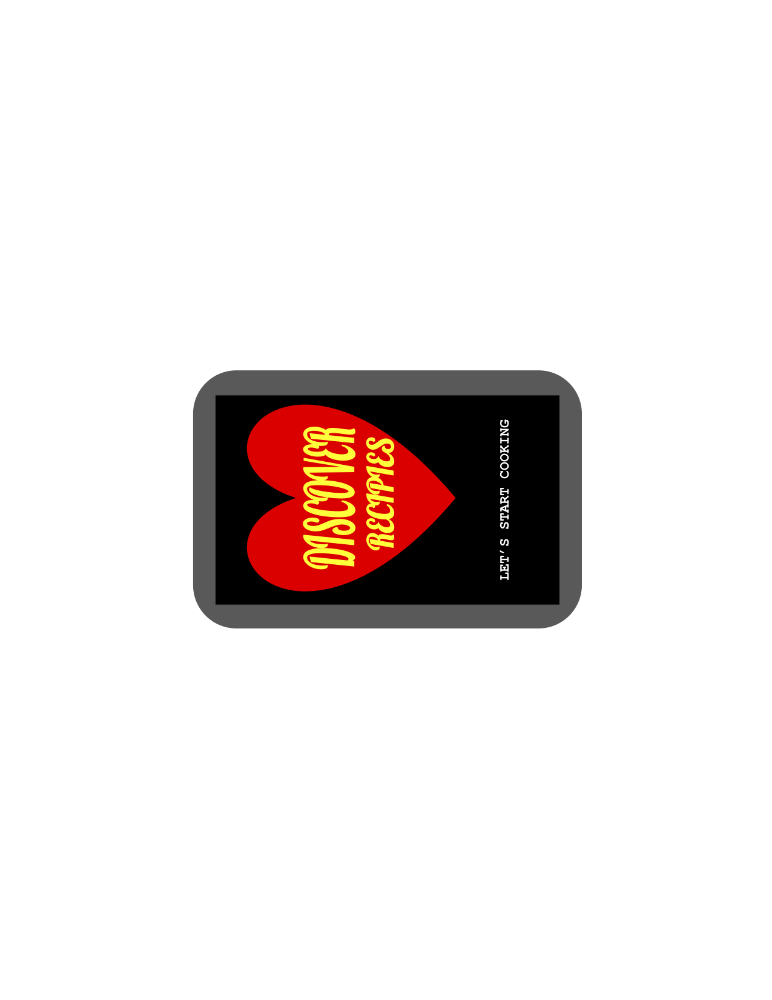

Problem Statement: Dinner Recipes

Our users face difficult time while trying to find the traditional recipes of their favorite delicacies while searching the internet. Our solution should provide users with an easier way of accessing their recipes.
Affinity Diagram: Dinner Recipes

My group member and I worked together to think about multipes ideas about dinner recipes.
Personna: 2 Personna for Dinner Recipes App

A personna of a typical dinner recipes app user.
Storyboard: 2 Storyboard for Dinner Recipes App

A storyboard to illustrate why a person would need to use the Dinner Recipes App.
Sketches
Rough ideas of how the application may look.
Paper Prototype

A paper walkthrough of the potiental look of every screen in the application.
Hi-Fi Prototype: Dinner Recipies App

A scenario and tasks and the outcome of usability tests.